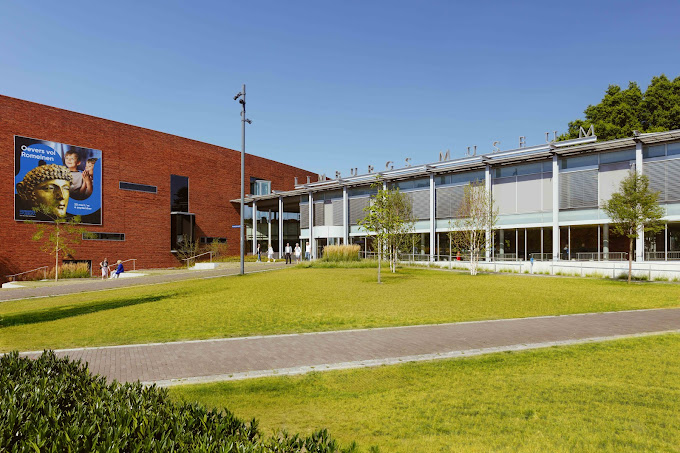
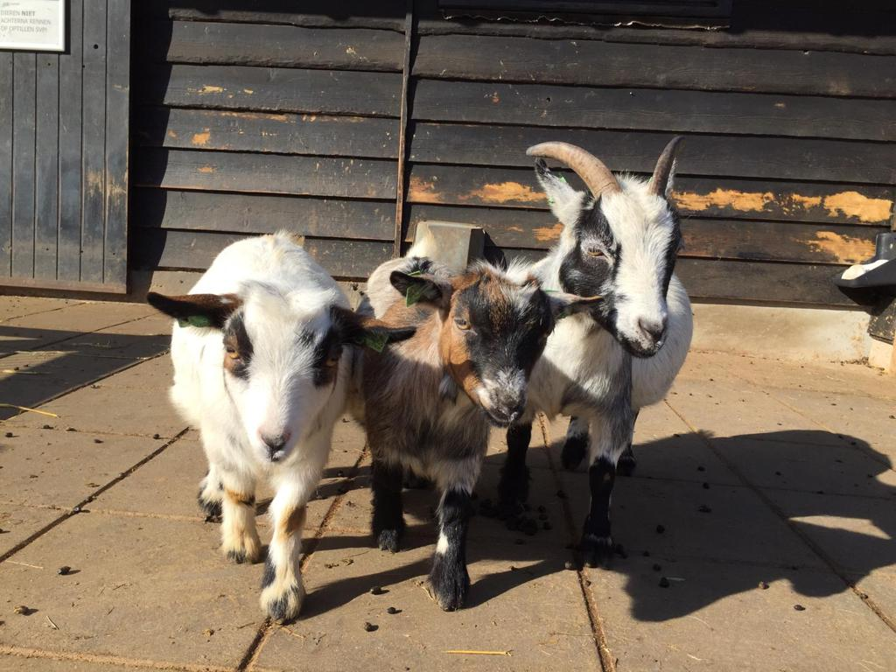

Verrassend én verfrissend. Eigenzinnig én prikkelend. Het Limburgs Museum heeft schwung. Met bezieling wekken we de geschiedenis van Limburg tot leven.
Ga de dialoog aan met de verhalen van Limburg die fascineren en inspireren. Die het verleden duiden, het heden tonen en de toekomst schetsen. Ontdek historische inzichten. Interactief en vanuit verschillende invalshoeken. Het Limburgs Museum is actief in heel Limburg.
Geboren of getogen in Limburg? Afkomstig van over de provinciegrens? Het Limburgs Museum is voor iedereen. Net als de Limburgse geschiedenis.
Het Limburgs Museum. Van ós. Voor iedereen.
 Kinderboerderij Hagerhof is al sinds de opening in 1977 een begrip in Venlo. Iedereen kan op een recreatieve en ontspannen manier kennis maken met de dieren en de natuur. Door een wandeling over de kinderboerderij van maar liefst 2 hectare, maak je kennis met alle Nederlandse boomsoorten en Nederlandse landbouwhuisdieren. Die mogen uiteraard volop geaaid, geknuffeld en gevoerd worden. Ook is er een kruidentuin, een bijenstal, een eendenvijver met wiebelbrug, een trollenhut, een échte kabouterboom, een wilgenhut en een speeltuin.